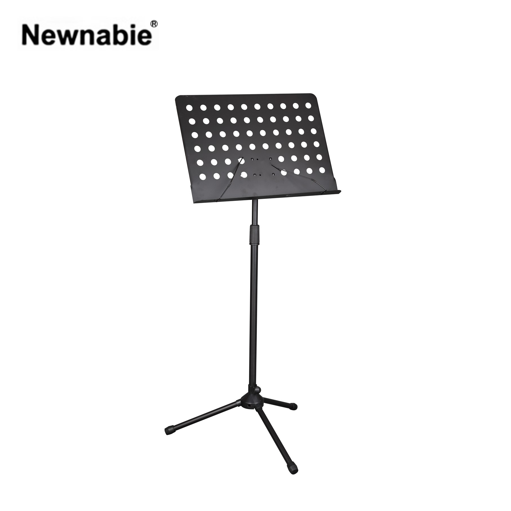

NB-526은 Boyong 공식 카탈로그상 BY-526과 동일 스펙의 휴대용 타공 보면대입니다. Plate가 반으로 접히는 구조로 보관·이동 시 부피를 크게 줄일 수 있고, 전용 가방이 기본 포함되어 설치·철수가 간편합니다. Ø28 mm 타공으로 경량성을 확보하면서도 490×330 mm 플레이트로 악보 지지 면적은 넉넉합니다.

휴대성에 특화된 타공 보면대. Plate가 반으로 접혀 가방 내 부피를 최소화하며, 전용 가방이 기본 포함됩니다.
NB-526은 제조사 Boyong 공식 카탈로그상 BY-526 원형과 동일한 스펙으로 공급되는 보면대입니다. 가장 큰 특징은 Plate(악보면)가 중앙에서 반으로 접히는 구조로, 휴대·보관 시 부피가 극적으로 줄어들어 가방에 쏙 들어갑니다.
Ø28 mm 타공으로 경량성을 확보한 스틸 플레이트는 490×330 mm 크기로 일반 악보·바인더를 충분히 지지합니다. 중량 2.5 kg의 실용적인 무게와 전용 휴대용 가방 기본 포함으로, 이동이 잦은 연주자·학생에게 특히 적합합니다.
| 모델명 | NB-526 (제조사 원형: Boyong BY-526) |
|---|---|
| 타입 | Perforated Music Stand (Ø28 · Folding Plate) |
| Height | 750 – 1200 mm |
| Plate Size | 490 × 330 mm |
| Hole | Ø28 mm 타공 · Plate 접힘 |
| Material | Steel |
| Net Weight | 2.5 kg |
| 구성 | 본체 + 전용 휴대용 가방 (기본 포함) |
| 권장소비자가 | 44,000 원 / 개 (VAT 포함) |
※ 본 사양 · 단가는 수입원(현대에이브이씨) 2026-01-01 스탠드 가격표 기준입니다.